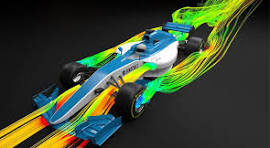

Engineering in Formula 1 presents some of the most complex challenges in motorsport, as teams constantly push the boundaries of technology, performance, and reliability. Engineers must design cars that are not only incredibly fast but also meet strict regulations on safety, weight, aerodynamics, and power unit efficiency. Balancing downforce and drag is a constant battle—too much downforce slows the car on straights, while too little reduces grip in corners. Packaging components tightly for optimal airflow without overheating is another major difficulty, especially with the hybrid power units that combine internal combustion engines with energy recovery systems. Every component, from suspension to gearbox, must be built to endure high stress while remaining as lightweight as possible. On top of that, the car must perform consistently across a wide range of tracks, temperatures, and weather conditions, making F1 engineering a relentless pursuit of precision, innovation, and adaptability.
The Drag Reduction System (DRS) in Formula 1 is a technology designed to aid overtaking by reducing aerodynamic drag. It works by opening a flap on the rear wing, which decreases downforce and allows the car to gain speed on straights. DRS can only be used in designated zones on the track and under specific conditions—most commonly when a driver is within one second of the car ahead. While it doesn’t guarantee an overtake, DRS gives drivers a temporary speed boost, making wheel-to-wheel racing more competitive and exciting.

Pit stops in Formula 1 are fast, highly coordinated operations where teams change tires, make minor adjustments, or address mechanical issues in just a few seconds. A typical tire change involves up to 20 crew members and can be completed in around 2 to 3 seconds, with the fastest stops recorded under 2 seconds. Precision is critical—any mistake, such as a loose wheel or delayed release, can cost valuable time or lead to penalties. Strategy also plays a major role, as the timing of a pit stop can determine a driver’s position on track, especially during safety car periods or changing weather. F1 pit stops are a showcase of teamwork, timing, and pressure management at the highest level.